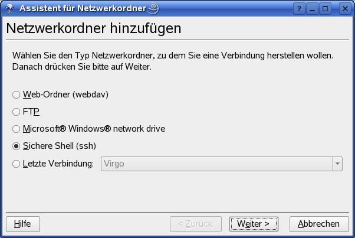

KDE
Killerfeature: FISH
Eines meiner liebsten Features von KDE ist die direkte Integration von Netzwerkverzeichnissen
über das FISH-Protokoll.
Einfach unter Netzwerkbrowser "Netzwerkordner hinzufügen" auswählen und im folgenden Dialog
ssh auswählen

und im folgenden Dialogfenster

die Daten des SSH-Servers eingeben. Aufpassen muß man nur, dass FISH anscheinend keine relativen
Verzeichnisse wie ~ mag. Also für das Homeverzeichnis auf dem SSH-Server immer
/home/[benutzername] oder entsprechendes eingeben.
Dann kann man das angegebene Verzeichnis wie ein lokales Verzeichnis benutzen,
z.B. kann man Dateien auf dem fremden Server auswählen, aber lokal über KDE drucken, ohne dass man erst per
scp die Datei auf den eigenen Rechner kopieren muß. Oder man editiert die Datei mit dem
bevorzugten Editor (z.B. Kate) lokal und ein Klick auf speichern speichert die Datei wieder auf dem entfernten Netzwerkverzeichnis, obwohl der Editor nativ gar kein SSH unterstützt (Reibungslos funktioniert das leider nur mit Programmen die den KDE-Dateiauswahldialog benutzen. GIMP z.B. benötigt eine lokale Kopie der Datei :-( ). Echt cool! Aber das coolste ist, dass das bei jedem Server funktioniert der SSH unterstützt, es werden keine weiteren Netzwerkprotokolle ala FTP, NFS oder SMB benötigt, welche aus Sicherheitsgründen meist geblockt sind. Daher ist die FISH-Integration in KDE eine echte
Arbeitserleichterung für alle die häufig auf Servern unterwegs sind, die aus Sicherheitsgründen nur
SSH zulassen.
P.S.: Das Feature ist so cool, dass Google vergleichbares in MAC OS X integriert hat (siehe
google-code-updates.blogspot.com).
Die neueste Version von diesem sog. MacFUSE gibts hier. Eine grafische Benutzeroberfläche dazu gibts unter www.macfusionapp.org.
Autostart unter KDE
Programme die beim Start von KDE automatisch ausgeführt werden sollen, müssen unter
~/.kde/Autostartliegen. Am einfachsten erzeugt man über das Kontextmenü unter Neu erstellen/Verknüpfung zu Programm einen Link zu dem aufzurufenden Programm indem man in sich öffnenden Dialogfenter im Tab Programm den Pfad zum entsprechenden Programm unter Befehl eingibt.
Will man mehr Kontrolle über die aufzurufenden Programme hilft kstart (Hilfe zu dem Befehl gibt es mit kstart --help). Um z.B. ein Programm nur auf nur auf der fünften Arbeitsfläche zu öffnen, kann man statt dem einfachen Pfad zum Programm den Befehl
kstart --desktop 5 programmnameunter Befehl eingeben. Daran sieht man auch, dass die Verküpfungen unter KDE die man über das Kontextmenü erzeugen kann mehr sind als nur symbolische Links, wie man sie von der Kommandozeile kennt. Stattdessen steht jede Verknüpfung für eine *.desktop-Text-Datei, die von KDE je nach Inhalt unterschiedlich interpretiert werden kann.
Will man auch die Reihenfolge der gestarteten Programme kontrollieren muß man ein kleines Shellskript schreiben und als ausführbare Datei unter ~/.kde/Autostart ablegen, z.B.:
#!/bin/bash kstart --desktop 5 thunderbird sleep 3 kstart --desktop 6 --activate programmDiese Skript startet Thunderbird auf Arbeitsfläche 5, und danach das Programm programm auf Arbeitsfläche 6 und springt auch von Thunderbird zu dem Programm auf Arbeitsfläche 6. Der Aufruf von sleep 3 garantiert dabei, dass das zweite Programm mit 3 Sekunden Verzögerung gestartet wird. Ohne sleep erlaubt Thunderbird seltsamerweise nicht, dass der Focus zum zweiten Programm auf Arbeitsfläche 6 springt.
Weitere Tipps
- Verschieben von Fenstern:
Manchmal passiert es, dass man ausversehen ein Fenster soweit nach oben verschoben hat, dass die Titelleiste nicht mehr sichtbar ist. Einfaches Anklicken und Ziehen des Fensters an der Titelleiste ist dann nicht mehr möglich. Hält man jedoch die Taste [[Alt]] (nicht [[Alt Gr]] ) gedrückt, so kann man das Fenster mit der linken Maustaste an einer beliebigen Stelle greifen und so das Fenster wieder nach unten verschieben.
Tipp: Weitere Befehle findet man im KDE Control Module unter "Window Behaviour/Actions". Diese Einstellungen erreicht man auch durch Klick auf die linke obere Ecke eines Fensters, wenn man im sich darauf öffnenden Menü "Configure Window Behaviour..." aufruft. - Fenster in den Hintergrund klicken
Jedem dürfte bekannt sein, dass man durch Klicken mit der linken Maustaste auf die Fensterleiste ein Fenster aktivieren und in den Vordergrund holen kann. Wie holt man jedoch Fenster in den Vordergrund die durch ein anderes Fenster komplett verdeckt sind? Ganz einfach unter KDE:
Durch Anklicken der Fensterleiste des gerade aktiven Fensters mit der mittleren Maustaste wird das gerade aktive Fenster in den Hintergrund geschickt und eventuell verdeckte Fenster kommen zum Vorschein. Wer das einmal ausprobiert hat, wird diese Funktion nicht mehr missen wollen. - Taskmanager unter KDE aufrufen:
Das Programm kpm, welches dem Taskmanager unter Windows gleicht, kan man unter KDE mit der Tastenkombination[[Ctrl]]-[[Esc]]
aufrufen. Durch Anklicken des Knopfes "Kill" (in dt. "Beenden") kann man dann die markierten Prozesse beenden. Alternativ kann man kpm auch über die Konsole mit> kpm &
oder auch das komplette Systemüberwachungsprogramm (von dem kpm nur ein Unterprogramm ist) mittels> ksysguard &
aufrufen. Letzteres findet man auch über das Startmenü unter "System/Überwachung/Systemüberwachung". - KDE-Taskleiste anzeigen:
Manchmal passiert es unter KDE dass die Taskleiste sich nicht mehr einblendet, wenn man die Maus an den unteren Bildschirmrand bewegt. In diesem Fall kann man sie mit [[Alt]]-[[F1]] wieder hervorholen. Wenn man so wie ich keine weiteren Icons auf dem Bildschirm hat, kann [[Alt]]-[[F1]] daher "lebensrettend" sein, denn oft bleibt die Taskleiste auch nach dem Reboot verschwunden und das System ist praktisch unbedienbar. - Weitere Tastenbefehle unter KDE:
- [[Ctrl]]-[[Esc]] : Taskmanager
- [[Ctrl]]-[[Alt]]-[[Esc]] : löscht Fenster in KDE (killt aber nicht den dazugehörigen Prozess)
- [[Alt]]-[[F2]] : Analog zu "Befehl ausführen" unter Windows; öffnet ein einzeiliges Terminal in dem man den Befehl zum Starten eines Programmes eingeben kann
- [[Ctrl]]-[[Fx]] : Umschalten auf den virtuellen Desktop Nummer "x"
- [[Ctrl]]-[[Alt]]-[[L]] : Bildschirm sperren
- Tastenbefehle für den X-Server:
Die Auflösung des X-Servers zur Laufzeit (also ohne Neustart) kann mit den Tastenkombinationen[[Ctrl]]-[[Alt]]-[[Ziffernblock-Plus]]
bzw.[[Ctrl]]-[[Alt]]-[[Ziffernblock-Minus]]
geändert werden. Mit der Kombination[[Ctrl]]-[[Alt]]-[[Backspace]]
wird der X-Server sofort beendet. - Probleme mit dem Papierkorb (Trashcan):
Es kann unter KDE passieren, dass der Papierkorb, obwohl er geleert wurde, noch Dateien enthält, welche jedoch auf dem Desktop nicht angezeigt werden (auch bei aktiviertem "versteckte Dateien anzeigen"). Diese Dateien muss man dann per Hand löschen. Man findet die Dateien im Papierkorb im eigenen Homeverzeichnis unter.local/share/Trash/files
Mittel > rm -rf * kann man dann dort alle Dateien endgültig löschen und damit den Papierkorb wirklich leeren. - Kompare:
Diese Programm findet man unter Suse Linux im Paket kdesdk3.